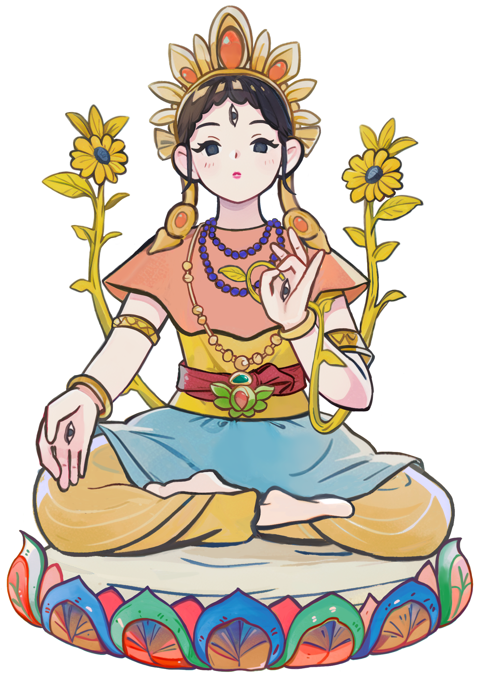

    <div class="container">
        <div class="main-content">
            <div class="picture brandpic">
                <div>
                    
                </div>
            </div>
            <div class="picture picture1"></div>
            <div class="div-for-words fade-in-div">
                <div>
                    <div>
                        尊聖度母，是觀世音菩薩見眾生苦惱而落的淚。
                        淚滴一滴化成了智慧的綠度母，一滴化成了慈悲的白度母。
                        祂會幫助我們脫離恐懼、脫離災難與三有之苦難，帶來平安。
                        度母不僅是外在的護佑者，更象徵內在慈悲與智慧的覺醒。<br><br>
                    </div>
                    <div>
                        <button class="button" alt="Enter Button" onclick="enterLink('wish')">
                            開始許願
                        </button>
                    </div>
                </div>
            </div>
        </div>
        <div class="deco-frame">
            <div class="picture picture2"></div>
            <div class="picture picture3"></div>
        </div>
        <div class="cloud-group">
            <div class="cloud cloud01"></div>
            <div class="cloud cloud02"></div>
            <div class="cloud cloud03"></div>
            <div class="cloud cloud04"></div>
        </div>
    </div>
